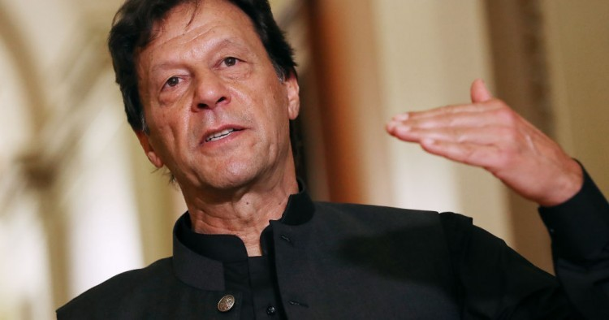
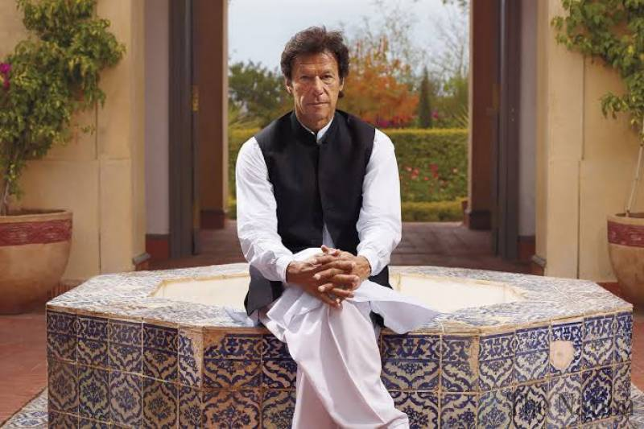

Will Imran ever play for the people of Pakistan again?
There is a saying in politics, never let the good crises go to waste. This is Imran’s chance to get his house in order. Governance crises and gross mismanagement of the economy have become the hallmarks of the incumbent regime. Imran’s government has been more about unleashing verbal attacks on the opposition, ensuing witch-hunt, and less to do with solving the issues of the general public. The prevailing dire circumstances irked the public and offered an old-guard an opportunity to kick-start a renewed attack at the current system—hoping to create enough stir and turmoil, forcing its backers to look at other options. Nawaz has dodged the establishment. He defied the expectations number of times and miffed quite a few people in the process. His decision to return from exile in Saudi Arabia raised quite a few eyebrows. He managed to do it again, when he returned from London and got arrested, and ably used the sympathy vote, particularly in Punjab, and thwarted Imran’s plan, under the watchful eye of the establishment. Nawaz is at it again. He left the country—being too poly to be treated in the country. And, now after recovering under mysterious circumstances, he has gone after the establishment and Imran’s government all guns blazing.
The rising public dissent against the government over inflation provided the divided opposition a perfect opportunity to make an alliance and compromise on party ideologies and unite on a single-point of restoration of democracy. Liberals (PPP) are compromising, Rightists (PML-N) are compromising, Far-rightist (JUI-F) are compromising, and many others extreme lefts following the suite, all for what, to make a coalition of instability, anarchy, and chaos. It is an incredible journey from a coalition of stability (2009-2018) to a coalition of instability (2020). The only party not willing to compromise on so-called accountability is PTI, despite compromising on most of its election pledges. As if PTI’s politics of vengeance was not enough, this 11-party coalition has created an unprecedented uproar within the establishment after a series of rallies, demanding ousting Imran and his backers. The political profession is at a cross-roads in the country. Politics in Pakistan is getting messier and dirtier by the day. The callous, unkind, and foul-mouthed politicians have stained the profession. The pointless and unsolicited political statements have become the norm of the game.
The selfish individuals have wrecked up the country along with the opportunists in the civil and military establishment. The strongmen of Pakistan, be it in politics or military, have dismantled the very fabric of the society in one way or another. The civil servant used to be free to make judgments based on professional ability and little interference from politicians. The constitution guaranteed security of tenure, and arbitrary dismissal was unlikely. Zulfikar Ali Bhutto abolished the CSP’s and brought new service, merging them into 22 grades, making way for cronies to become the civil servants. It was the start of decay. The culture started in the 1990s of loyal and party-linked civil servants spread like wild fire leading to economic and social mayhem. Most of the bureaucrats working in Punjab and Islamabad worked with the house of Nawaz, and despite not in government, they continue to have clout within the bureaucracy in Punjab and Islamabad.
Now the system is rotten to the core. The incumbent government regularly bemoans the systematic weakness and strong allegiances of bureaucracy with the PML-N and PPP. Inexperienced within PTI ranks is not an understatement. On every other issue, when PTI loses control, Imran, in either an interview or speech, confesses to mistakes. Apologies are not enough, and bemoaning the systematic bottlenecks such as on import of wheat on time is not enough. Imran’s urban middle class and rich voters are questioning his tactics. The majority may not have turned against him as yet. But he must prepare for the worst when he says if Pakistan holds elections today, he will come out victorious. He is gravely mistaken. This crisis brings an opportunity for Imran to put his house in order. The opposition is reeling on him, and unless there is another, well-orchestrated Remote Transmission System (RTS) break down, his chances to retain the power remain minimal.
Imran—who posed as a revolutionary and liberator of some kind, looking to follow some heterodox ideas, had to swallow a bitter pill. Now, he’s adamant that the public must follow suit. Everyone knew the riding would be hard under the inexperienced anchor, and those who believed in him must pay the price for their false conviction. Amidst all this drama, public confidence in the system is evaporating. The level of tolerance is diminishing, and the political class is fast losing the respect of the public. Imran must realize this and reach a compromise for the larger interest of this country. As the crisis of economy and governance deepens, it’s time to change tactics and play for the people, not against them.